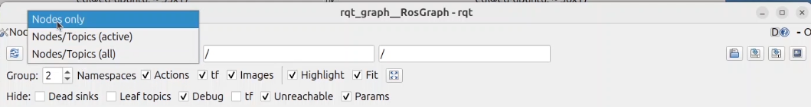
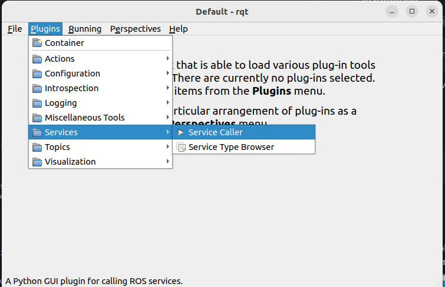
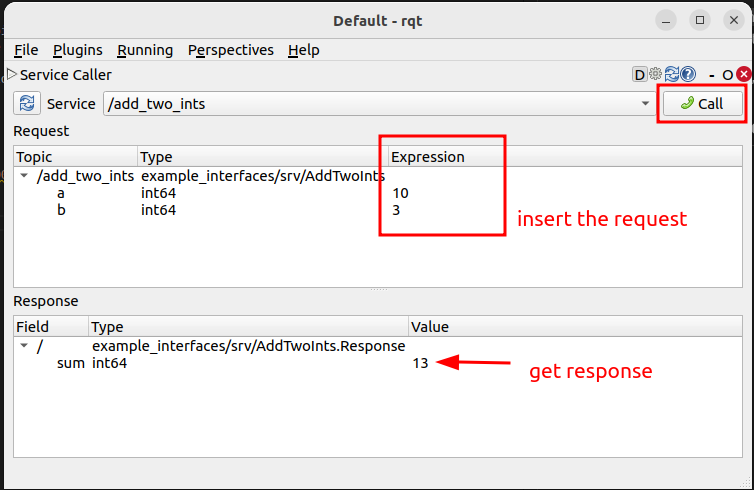

ROS 2 GUI tools: rqt and rqt_graph
1. Introduction
rqt is a graphical framework that hosts ROS 2 tools as plugins.
rqt_graph visualizes the active nodes and the topics connecting them. These
tools complement the ROS 2 CLI and are useful when developing or debugging a
system.
See the official RQt overview and usage guide for more information.
2. Install the tools
The ROS 2 desktop installation normally includes rqt. If the commands are missing, install the framework and its common plugins:
sudo apt update
sudo apt install ros-$ROS_DISTRO-rqt ros-$ROS_DISTRO-rqt-common-plugins
3. Prepare an example graph
Start Turtlesim in one terminal:
ros2 run turtlesim turtlesim_node
Start keyboard control in a second terminal:
ros2 run turtlesim turtle_teleop_key
4. Explore rqt
Start the plugin framework:
rqt
Plugins are available from the Plugins menu. Useful plugins include:
Introspection → Node Graph
Services → Service Caller
Topics → Topic Monitor
Configuration → Dynamic Reconfigure, when supported by the node
The exact menu contents depend on the rqt packages installed on the computer.
5. Visualize nodes with rqt_graph
Open the graph as a standalone tool:
rqt_graph
Alternatively, open Introspection → Node Graph from the rqt Plugins menu.
With Turtlesim and keyboard teleoperation running, the graph shows the
/teleop_turtle and /turtlesim nodes connected through
/turtle1/cmd_vel.

Use the controls above the graph to:
refresh discovery
include or hide topics
filter namespaces
show active connections only
Move the turtle with the keyboard and compare the graph with:
ros2 node info /teleop_turtle
ros2 node info /turtlesim
6. Call a service from rqt
Open Services → Service Caller. Select the /spawn service and enter
values for x, y, theta, and name.

Press Call to send the request. The response contains the name of the created turtle.

Compare this operation with the equivalent CLI command:
ros2 service call /spawn turtlesim/srv/Spawn \
"{x: 2.0, y: 2.0, theta: 0.0, name: second_turtle}"
7. Exercise
Run the publisher and subscriber created in the previous exercise.
Open
rqt_graphand locate both nodes and their shared topic.Stop the subscriber and refresh the graph.
Restart it and verify that the connection returns.
Use a topic-related rqt plugin to inspect the published values.
Start Turtlesim and call one of its services through rqt.
Use the CLI to cross-check what the GUI shows:
ros2 node list
ros2 topic list -t
ros2 service list -t